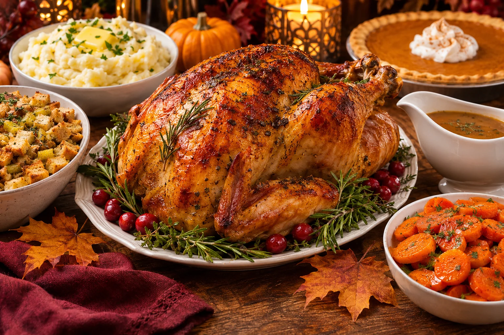
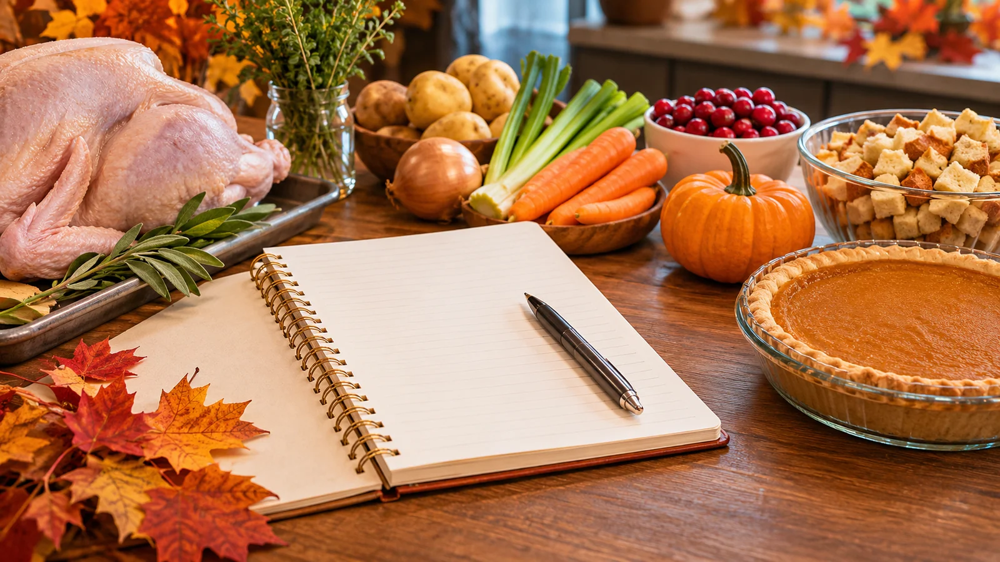
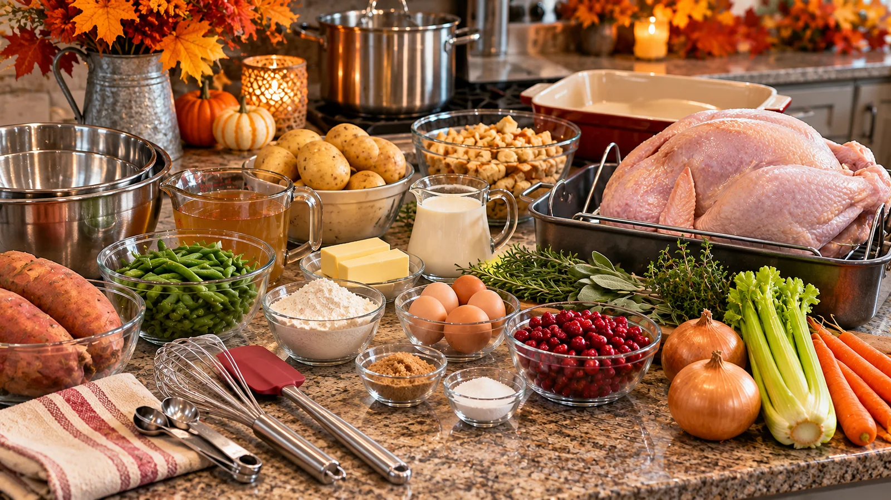
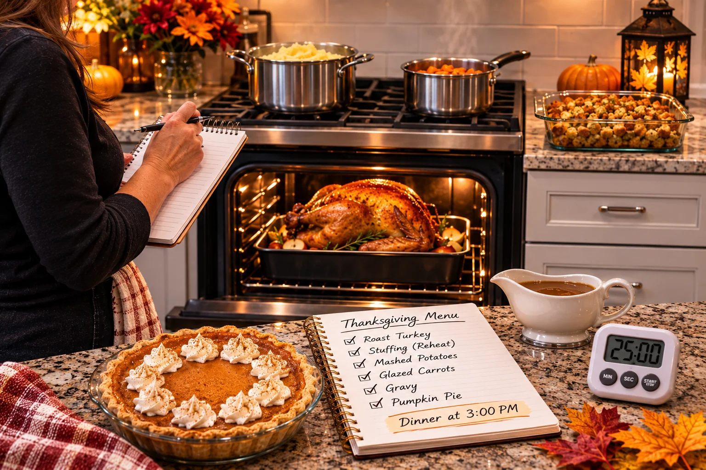

Your First Holiday Dinner, Made Easier

A beginner-friendly guide to planning, cooking, and serving a holiday meal without spending the entire day stressed in the kitchen.
A quick look at the plan
For our example: six guests, one oven, four burners, a 3:00 PM Thanksgiving dinner, and a $100 illustrative grocery budget. We’ll plan the menu, shop with purpose, prepare ahead, and work backward from serving time. The sample schedule below uses the completed recipes, with flexibility for actual doneness.
Hosting your first holiday dinner can feel like a pretty big responsibility. Maybe you volunteered for Thanksgiving, or maybe the person who usually cooks has handed you the apron. Suddenly you’re wondering how big a turkey to buy, when to start, and how to get everything warm at the same time.
The good news: you don’t need years of experience or a kitchen full of expensive equipment. You need a manageable menu, a realistic plan, and a little preparation. We’ll walk through a Thanksgiving dinner for six, but the same approach works for Christmas, Easter, and other family gatherings.
1. Start with the people, not the food
Confirm how many people are coming, including guests and children. Ask about food allergies, dietary restrictions, and dishes people particularly love or avoid. These answers determine portions, cost, and the menu.
Our example is four adults and two teenagers, counted as six full portions, with no dietary restrictions and a 3:00 PM serving time. Your numbers may be different, and that’s fine.
Decide how elaborate you actually want the meal to be. A smaller dinner done well beats an ambitious menu that keeps you trapped in the kitchen all afternoon.
2. Build a menu you can manage
Start with one main dish, two or three sides, bread, dessert, and drinks. Add more only if you have the time, equipment, and help.
If a whole turkey feels intimidating, a turkey breast can be a sensible choice for a smaller gathering. You’ll need to adjust the quantity and cooking plan accordingly.

Our Thanksgiving menu
| Dish | Approach |
|---|---|
| Oven-roasted turkey | Homemade |
| Mashed potatoes | Homemade |
| Turkey gravy | Homemade |
| Bread stuffing | Baked separately |
| Brown-sugar glazed carrots | Homemade |
| Dinner rolls | Store-bought |
| Pumpkin pie | Homemade or bakery |
| Cranberry sauce | Store-bought |
3. Buy enough food without going overboard
A whole bone-in turkey is commonly estimated at roughly 1 to 1½ pounds per person, including bones. For six people, a 10–12-pound bird provides a useful cushion for portions and leftovers, though actual yield varies.
These planning amounts correspond to the six linked recipes. Check each recipe for exact ingredients and optional additions. For six people, plan a 10–12-pound turkey, 3 pounds of potatoes, 12 cups of dried bread cubes, and 2 pounds of carrots, plus the ingredients for gravy and one 9-inch pumpkin pie. Dinner rolls and cranberry sauce are optional store-bought additions.
Shopping list for six
| Ingredient | Quantity / notes |
|---|---|
| Whole turkey | 10–12 lb |
| Potatoes | 3 lb |
| Sturdy bread | 12 cups dried cubes, about ¾-inch |
| Whole carrots | 2 lb for glazed side, plus 2 medium for turkey pan |
| Onion | 1 large for turkey pan + 1 medium for stuffing |
| Celery | 2 stalks for turkey pan + 3 stalks for stuffing |
| Unsalted butter | 6 tbsp turkey + 6 tbsp potatoes + 8 tbsp stuffing + 3 tbsp carrots; plus up to 4 tbsp for gravy if needed (23–27 tbsp total) |
| Low-sodium broth | 1 cup turkey pan + 2–2½ cups stuffing + enough for 2 cups gravy liquid including drippings (up to 5½ cups total) |
| Eggs | 2 stuffing + 2 pumpkin pie |
| Whole milk | ¾ cup for potatoes |
| Pumpkin pie | 1 refrigerated 9-inch crust, 15-oz pure pumpkin, 12-fl-oz evaporated milk |
| Pantry / seasoning | Olive oil, flour, granulated and brown sugar, sage, thyme, rosemary, cinnamon, ginger, nutmeg, cloves, salt, pepper, garlic powder, paprika, parsley |
| Optional | Sour cream, lemon, fresh herbs, dinner rolls, cranberry sauce, drinks |
4. Give the meal a budget
Let’s use $100 as a sample target, not a guarantee of local grocery prices. Sales, store choice, and pantry supplies will change the total.
Check your pantry first, watch holiday sales, consider store brands, and accept a guest’s offer to bring dessert or rolls. There’s no prize for spending the most.
Illustrative $100 budget
| Category | Sample allowance |
|---|---|
| Turkey | $25 |
| Potatoes and vegetables | $15 |
| Stuffing ingredients | $12 |
| Gravy and seasonings | $8 |
| Rolls and cranberry sauce | $8 |
| Pumpkin pie ingredients | $12 |
| Drinks | $10 |
| Extra supplies | $10 |
| Total | $100 |
5. Check the kitchen before you shop
- Roasting pan that fits the turkey and the oven; sturdy support for a flexible disposable pan
- Reliable food thermometer
- Large pot, saucepan or skillet, baking dish, colander, and mixing bowls
- Knife, cutting board, measuring tools, oven mitts, and serving utensils
- Enough refrigerator space and shallow containers for leftovers
A thermometer matters more than a specialty gadget. Also check oven rack clearance before you buy the bird.

6. Prepare ahead so the day stays manageable
One week before
- Confirm guests and menu; check equipment and pantry.
- Shop for shelf-stable items and plan turkey thawing.
- Choose serving dishes and make room in the refrigerator.
Thaw the turkey safely
For refrigerator thawing at 40°F or below, allow approximately 24 hours per 4–5 pounds. A 10–12-pound turkey typically needs about three days; allow extra time when possible. Keep it wrapped on a tray on the lowest refrigerator shelf. After refrigerator thawing, cook within one to two days. Never thaw poultry on the counter.
Cold-water thawing takes about 30 minutes per pound, with the wrapped bird submerged in cold water and the water changed every 30 minutes. Cook immediately after cold-water thawing.
Two days before
- Finish grocery shopping.
- Cube and dry bread for stuffing as appropriate to the recipe.
- Prepare a pie ahead and refrigerate it promptly.
- Gather the pans, serving dishes, and utensils you will use.
The day before
- Wash and cut carrots; refrigerate.
- Chop stuffing vegetables; refrigerate separately.
- Measure seasonings, set the table, and clear counter space.
- Keep uncooked stuffing’s wet and dry components separate until cooking time.
Don’t assume every dish can be assembled the night before. Follow each recipe’s make-ahead and refrigeration instructions.
7. Plan dinner backward from the time you want to eat
One of the easiest ways to coordinate several dishes is to stop asking, “When should I start cooking?” and start asking, “When does each dish need to finish?” Work backward from that time.
How the countdown works
Choose a serving time and work backward from each dish’s estimated finishing time. Prepare ingredients before their cooking slots, then start the longest dishes first. A countdown coordinates the work; the thermometer and doneness tests determine when food is actually ready.
Different oven temperatures and pan sizes can prevent dishes from baking together. Give the turkey its own oven block, then use the freed oven for stuffing and rolls while potatoes, carrots, and gravy finish on the stovetop.
A practical Thanksgiving schedule for six
This example assumes one oven, four burners, a fully thawed 10–12-pound unstuffed turkey, and dinner at 3:00 PM. It is a working schedule, not a guarantee. Turkey roasting can take roughly 2¾–3¾ hours at 325°F; begin temperature checks around 2½ hours and adjust the remaining dishes to actual doneness.
Make the pumpkin pie the day before and refrigerate it. Dry the bread and chop stuffing vegetables ahead, keeping wet ingredients and raw eggs separate until baking day. On Thanksgiving morning, set out measured ingredients and pans, then follow the clock-time plan below.
Coordinate the oven and stovetop
The key to preparing Thanksgiving dinner with one oven is knowing which dishes need it and which can cook on the stovetop. The turkey needs the oven first. Once it is finished, the stuffing can go in. Meanwhile, the potatoes, carrots, and gravy can be prepared on the stovetop. Here is how to bring everything together for a 3:00 PM dinner.
1. Start with the turkey
Around 8:15 AM, preheat the oven to 325°F and finish preparing your fully thawed turkey. Aim to have it roasting by 9:00 AM. Begin checking its temperature around 11:30 AM. Continue roasting until the thickest part of the breast, innermost thigh, and innermost wing each reach 165°F. Cooking times are estimates, so do not remove the turkey simply because the clock says it is ready.
2. Give the stuffing its turn in the oven
Once the turkey is finished, remove it and increase the oven temperature to 350°F. Bake the stuffing for approximately 40–55 minutes: about 30 minutes covered, then 10–25 minutes uncovered, until the top is golden and the center reaches 165°F. Ideally, the turkey will finish around 12:45–1:00 PM. This gives the oven time to heat up and the stuffing time to bake without rushing.
3. Finish the stovetop dishes while the stuffing bakes
Have ingredients measured and vegetables prepared ahead of time. For a 3:00 PM dinner, start the mashed potatoes around 2:00 PM, the glazed carrots around 2:25 PM, and the gravy around 2:35 PM. These are starting points, not deadlines. If a dish finishes early, keep it safely hot at 140°F or above with verified hot holding, or refrigerate it promptly if you cannot maintain that temperature.
4. Handle the turkey while the other dishes finish
Let the turkey rest for approximately 30 minutes before carving. If it finishes well before dinner, do not leave it sitting on the counter for hours. Carve the rested turkey, transfer the meat into shallow containers, and refrigerate promptly. When ready to serve, reheat the meat to 165°F, allowing enough time and oven space. Only use hot holding instead if you can verify the turkey remains at 140°F or above.
5. Adjust the schedule when necessary
If the turkey takes longer than expected, the stuffing must wait for the oven. Keep the stuffing ingredients refrigerated until you are ready to assemble and bake it. Give the stuffing its full cooking time, even if dinner starts later. The goal is not to finish everything at exactly 3:00 PM. It is to have every dish properly cooked, hot, and ready to enjoy together.

Food safety comes before the clock. A turkey that finishes much earlier than planned cannot sit on the counter until dinner. Keep it at 140°F or above only with verified hot holding, or carve, refrigerate promptly within two hours, and reheat to 165°F. Do not use an unverified warm oven setting as proof of safe holding. Separately baked stuffing must reach 165°F in the center.
Thanksgiving day: sample clock-time plan
Write the plan where you can see it and set reminders. If the turkey runs late, delay dinner as needed so stuffing finishes baking and the turkey reaches its safe doneness target. Potatoes, carrots, and gravy can be finished closer to serving time on the stovetop. Hold finished hot dishes at 140°F or above only when verified, or refrigerate promptly.
Sample Thanksgiving countdown
If the turkey finishes early
If the turkey finishes well ahead of dinner and you cannot safely keep it at 140°F or hotter, carve it once rested, divide the meat into shallow covered containers, and refrigerate promptly at 40°F or below (within 2 hours of cooking). Before serving, reheat the carved turkey with a little broth, covered, until the thickest pieces reach 165°F. Plan oven space and allow enough time for reheating; do not leave cooked turkey on the counter while waiting for the stuffing. If you cannot safely finish every dish on schedule, serve dinner later.
| When | What to do |
|---|---|
| Day before | Bake and chill pumpkin pie; dry stuffing bread; prep vegetables |
| 8:15 AM | Preheat oven to 325°F; prepare turkey |
| ~9:00 AM | Turkey into oven; roast time varies |
| ~11:30 AM | Begin checking turkey temperature in three locations |
| ~12:45–1:00 PM* | Turkey out only once all three locations reach 165°F; rest ~30 min |
| After turkey comes out | Raise oven to 350°F; assemble and bake stuffing for 40–55 min to 165°F |
| ~2:00 PM | Start mashed potatoes; allow ~40–55 min total including prep |
| ~2:25 PM | Start glazed carrots; allow ~25–30 min total |
| ~2:35 PM | Prepare gravy; use pan drippings if available |
| ~2:40–2:55 PM | Warm rolls if oven available and package directions permit; carve turkey |
| 3:00 PM | Check doneness and safe holding; serve when ready |
8. Use shortcuts without feeling guilty
Buy the rolls. Use canned cranberry sauce. Choose a bakery pie if you prefer. A good holiday dinner isn’t measured by how many ingredients you made from scratch.
Useful shortcuts
| Dish | Shortcut |
|---|---|
| Rolls | Bakery or refrigerated |
| Cranberry sauce | Canned |
| Pumpkin pie | Bakery pie |
| Gravy | Prepared gravy or mix |
| Stuffing | Boxed mix with vegetables and herbs |
| Vegetables | Pre-cut or frozen |
9. When something doesn’t go as planned
Turkey taking longer? Check the thermometer and keep roasting until safe. Skin browning too quickly? Loosely tent the dark areas with foil. Mashed potatoes too thick? Add warm milk a tablespoon at a time. Gravy lumpy? Whisk or strain. Stuffing dry? Add a little warm broth and continue cooking as needed.
If a dish finishes early, hold it at 140°F or above or refrigerate promptly for reheating. Don’t leave perishable food in the 40–140°F danger zone for more than two hours. It’s fine to serve dinner later than planned if that’s what safe cooking requires.
10. Keep the table welcoming, not complicated
You need enough seats, clean plates, utensils, napkins, and glasses. A simple centerpiece or a few decorations can be plenty. If the table is crowded, serve buffet-style from the counter. Decide where hot serving dishes will go before carrying them out.
11. Plan for leftovers before dinner
Have shallow containers ready. Refrigerate perishable leftovers within two hours, dividing large portions so they cool quickly. Most properly refrigerated cooked leftovers keep about 3–4 days at 40°F or below; freeze for longer storage. Reheat leftovers to 165°F. Turkey sandwiches, soup, pot pie, and casseroles can stretch the meal into the next few days.
12. Remember why you’re hosting
The turkey doesn’t need to look like a magazine cover, and a bakery pie doesn’t require an explanation. Your guests came to spend time together. With a realistic menu and a countdown you understand, you can enjoy that time too. Each dinner teaches you what to repeat and what to change next year.
Free Holiday Dinner Planning Kit
Free Holiday Dinner Planning Kit: menu planner, grocery checklist, budget worksheet, preparation checklist, cooking countdown planner, and basic recipe cards. Download it free using the link below. No signup required.
You don’t need to do everything perfectly. Start with a plan, make the recipes your own, and enjoy the time together. Happy hosting!